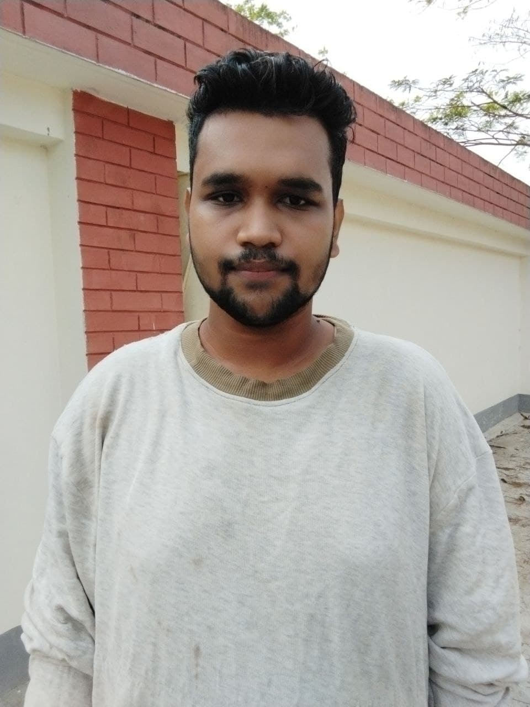
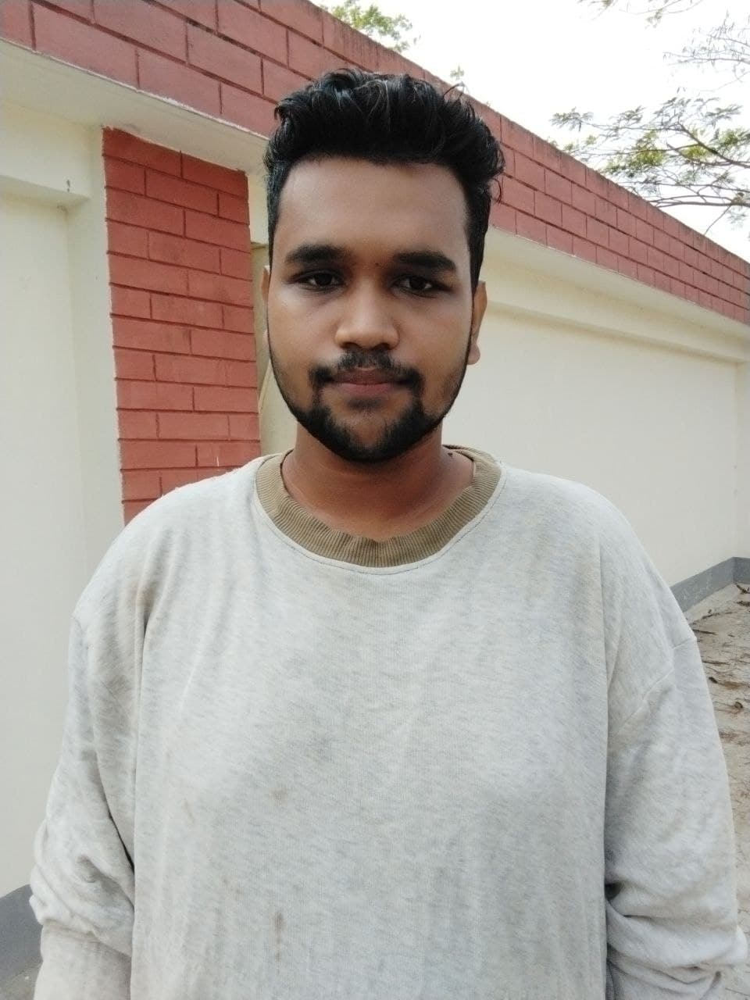

Hello, I'm
MOFIZUR RAHMAN FAHAD
.jpg)

Hi, this is my homepage, so I have to say something about myself. Sometimes it is hard to introduce yourself because you know yourself so well that you do not know where to start with. Let me give a try to see what kind of image you have about me through my self-description. I hope that my impression about myself and your impression about me are not so different. Here it goes. I am a person who is positive about every aspect of life. There are many things I like to do, to see, and to experience. I like to read, I like to write; I like to think, I like to dream; I like to talk, I like to listen. I like to see the sunrise in the morning, I like to see the moonlight at night; I like to feel the music flowing on my face, I like to smell the wind coming from the ocean. I like to look at the clouds in the sky with a blank mind, I like to do thought experiment when I cannot sleep in the middle of the night. I like flowers in spring, rain in summer, leaves in autumn, and snow in winter. I like to sleep early, I like to get up late; I like to be alone, I like to be surrounded by people. I like country’s peace, I like metropolis’ noise; I like the beautiful west lake in Hangzhou, I like the flat cornfield in Champaign. I like delicious food and comfortable shoes; I like good books and romantic movies. I like the land and the nature, I like people. And, I like to laugh.
Download CVThe PharmD program at Rutgers gives students aspiring to careers in pharmacy the singular opportunity of studying at a research-intensive pharmacy school within one of the nation’s largest and most comprehensive academic health centers. In our classrooms and laboratories, and in a wide variety of pharmacy practice settings, our students are mentored by world-class clinical and research faculty while learning alongside their peers within Rutgers Biomedical and Health Sciences, including students of medicine, nursing, and public health, among others.

Our Gym is set up for any type of training. From Power lifting , Bodybuilding , Functional fitness , Strongman and general fitness we have equipment to suite.We have experienced staff on hand to help and give advise on training and diet.

An advertising agency, often referred to as a creative agency or an ad agency, is a business dedicated to creating, planning, and handling advertising and sometimes other forms of promotion and marketing for its clients.

Hard rock or heavy rock is a loosely defined subgenre of rock music typified by a heavy use of aggressive vocals, distorted electric guitars, bass guitar, and drums, sometimes accompanied with keyboards. It began in the mid-1960s with the garage, psychedelic and blues rock.

 
